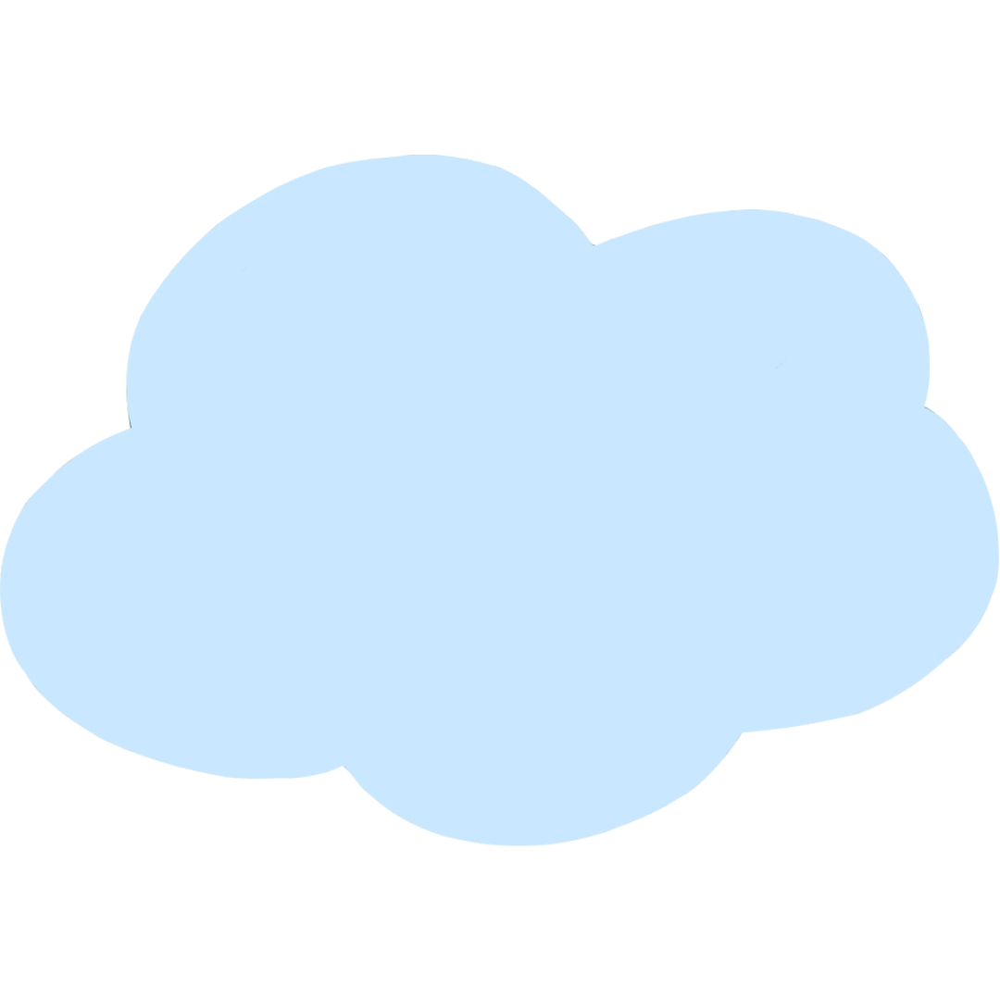
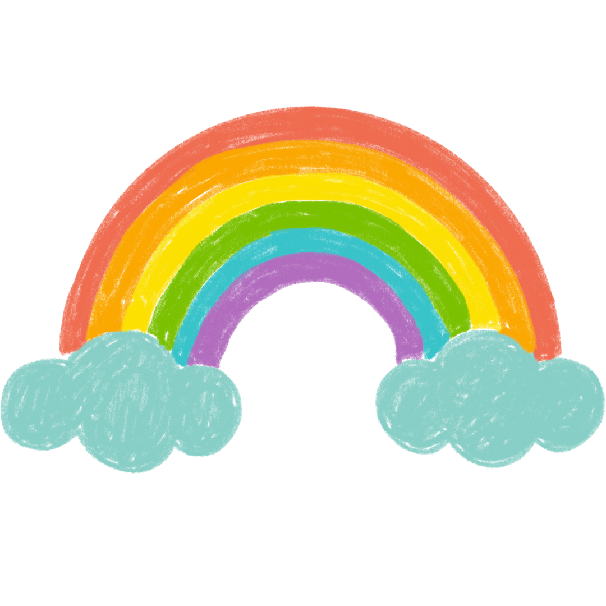
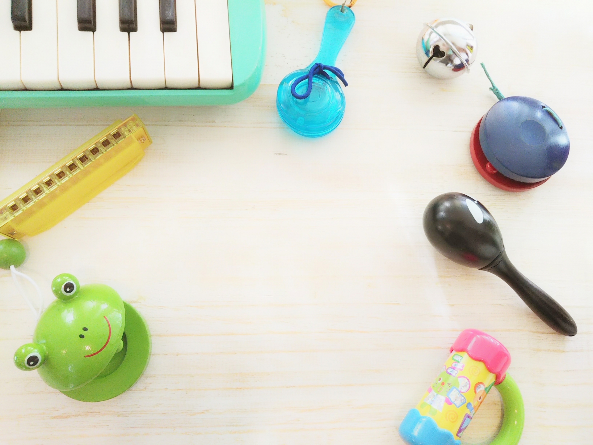
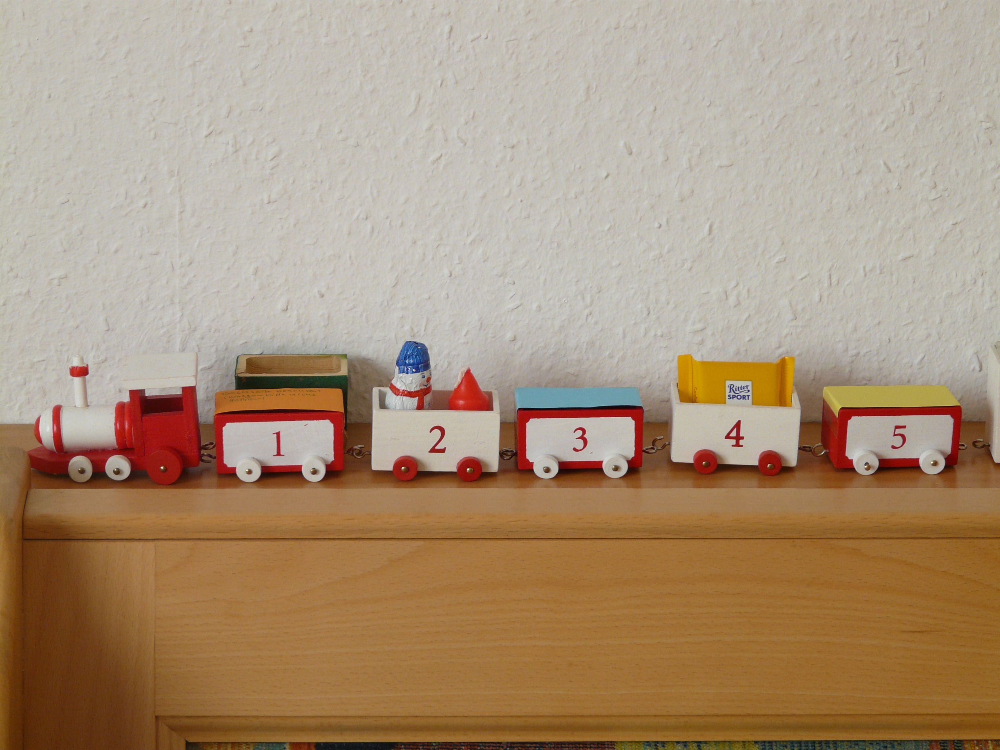
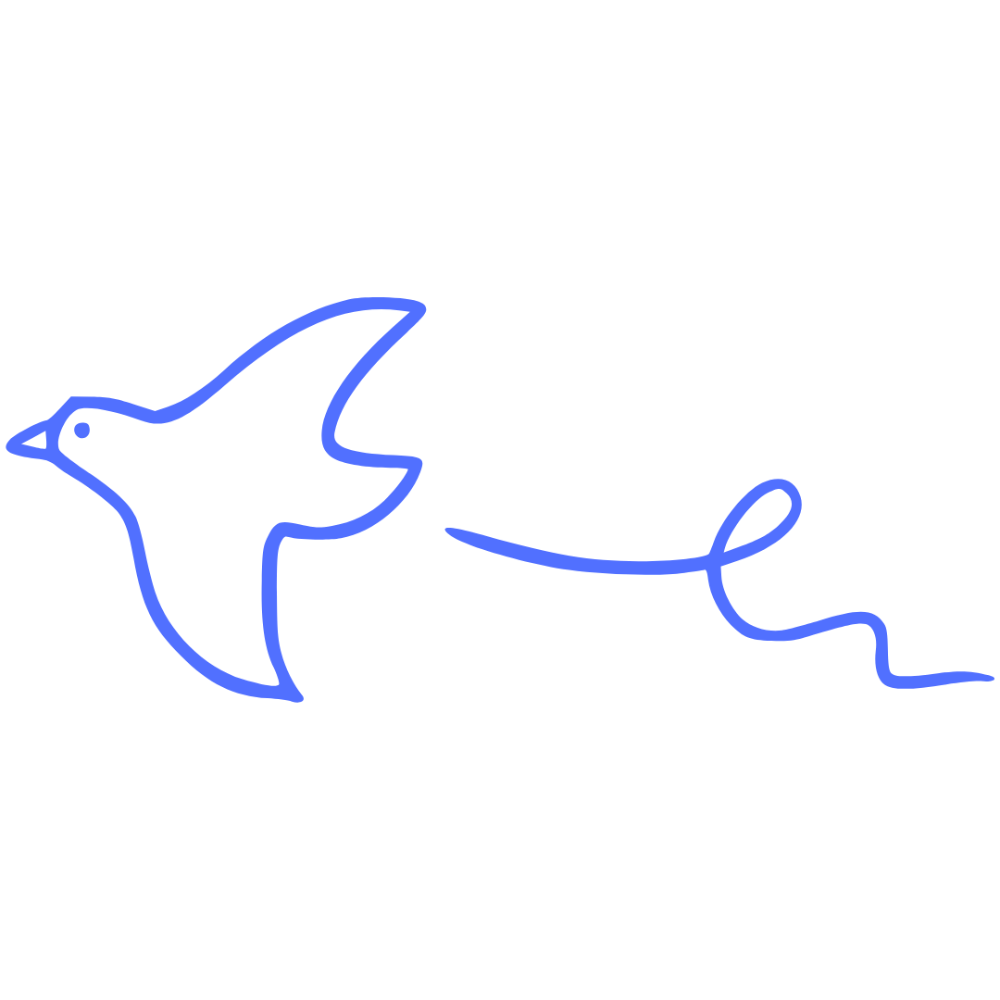
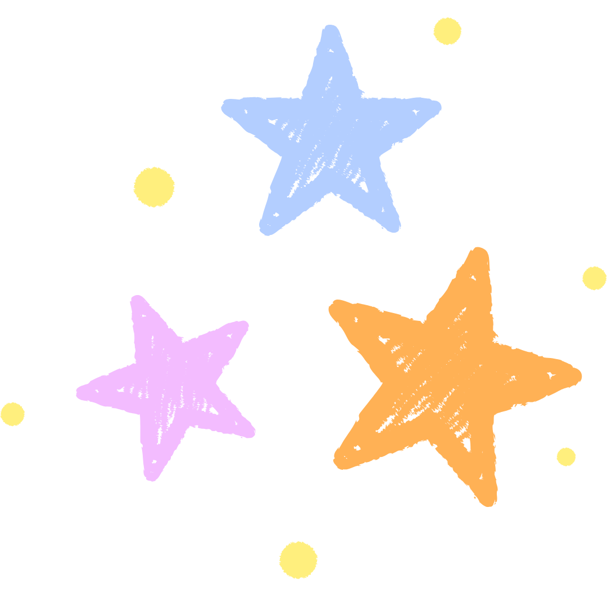
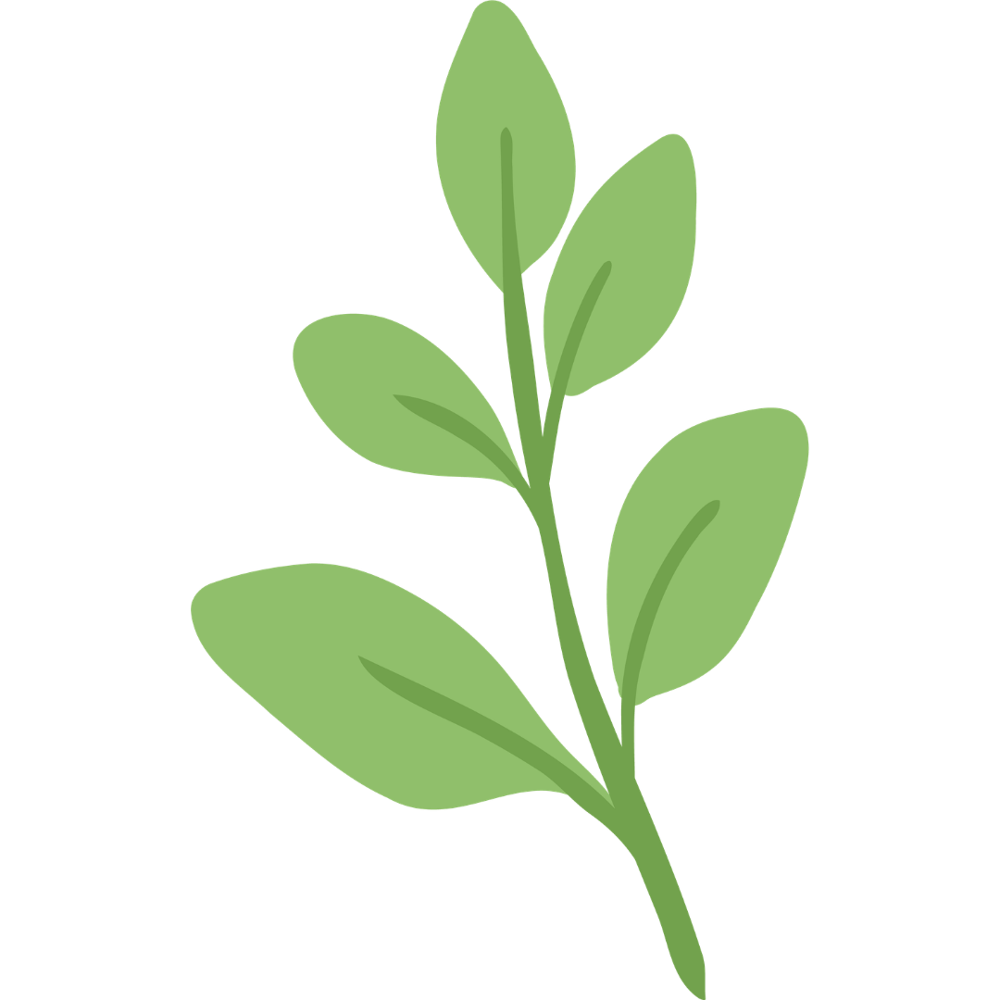

自然と音に包まれて、
心豊かに育つ
四季折々の自然に触れ、風の音や鳥のさえずり、子どもたちの笑い声を感じながら、
一人ひとりの「やってみたい」という気持ちを大切にしています。
遊びやさまざまな経験を通して、自分らしく、のびのびと成長できる環境を育んでいます。


園の取り組み
さまざまな経験を通して、自分らしくのびのび成長できる環境を作ります。
自然に触れる
音を楽しむ

自分らしく育つ



そらもりブログ
もっと見る→



お知らせ
もっと見る→